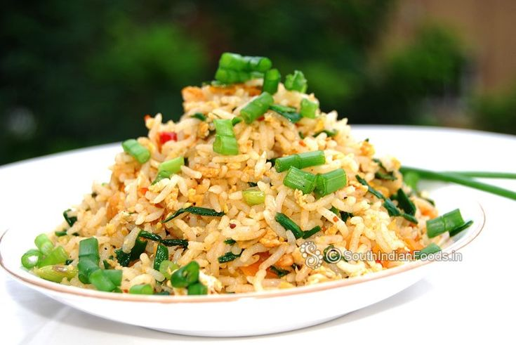

Egg Fried Rice

Description
A very simple, self explanatory egg fried rice dish
Ingredients
- 2 eggs
- cold rice
- 1 tbsp vegetable oil
- 2 pcs scallion
- 1 bird's eye chilli (optional)
- 1 tbsp soy sauce
Steps
- Crack the two eggs and mix with the cold rice
- Chop the scallions and put into pan covered with vegetable oil on low heat (add
the bird's eye chilli for a slightly spicier egg fried rice)
- Add soy sauce to the pan, and stir fry the scallions until the oil starts
to simmer
- Add the cold rice and eggs mixture into the pan, and turn the heat up to medium
- Mix the rice in pan until rice is fried
- Enjoy the freshly made egg fried rice